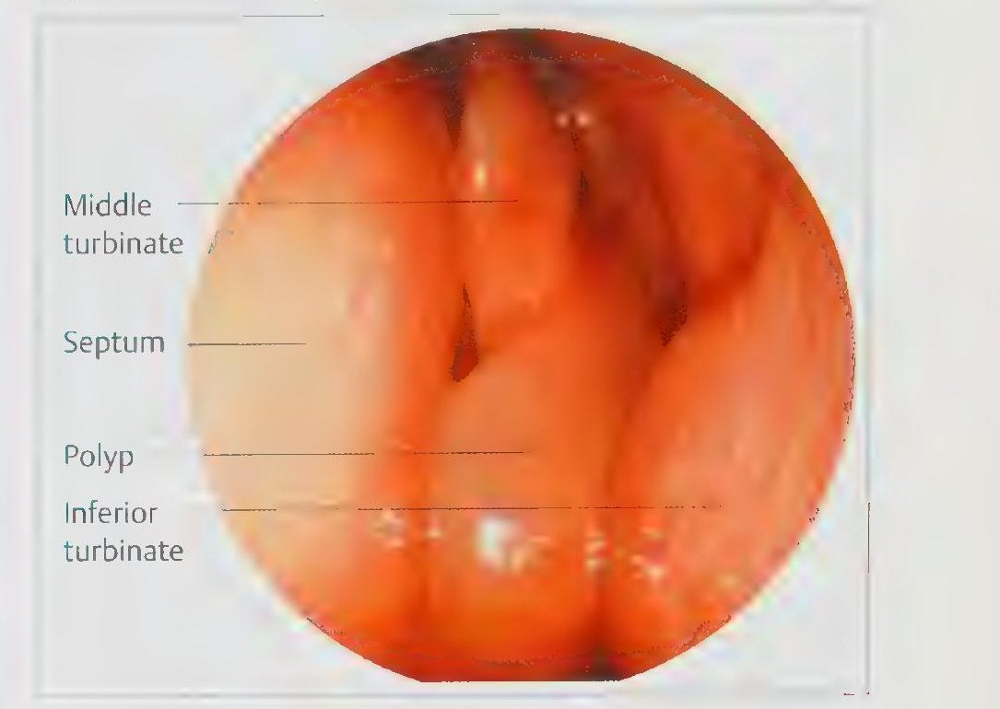
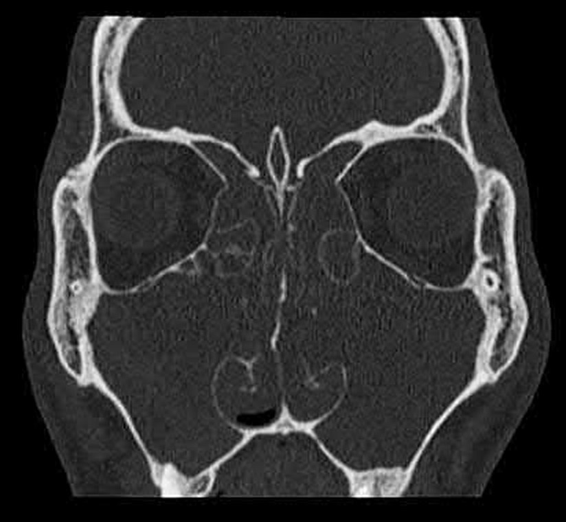

Сверка с PDF рубрикатора выполняется…
Полипозный риносинусит
Клинические рекомендации от 26.12.2024 · взрослые
Основные положения
- Диагноз устанавливают на основании:
- жалоб и анамнеза;
- данных осмотра;
- передней риноскопии;
- эндоскопии полости носа и носоглотки;
- компьютерной томографии (КТ) околоносовых пазух.
- Препаратом выбора является мометазон в форме назального спрея по 100 мкг в каждую половину носа 2 раза в сутки, курс 3–6 месяцев. Если симптомы не уменьшаются в течение 5–6 недель, рассматривают вопрос о хирургическом лечении.
- Системная антибактериальная терапия при полипозном риносинусите не рекомендуется.
- Генно-инженерная биологическая терапия (дупилумаб, омализумаб или меполизумаб) рекомендуется:
- при тяжёлом течении;
- при сочетании с бронхиальной астмой.
- Показания к хирургическому лечению:
- неэффективность медикаментозной терапии;
- распространённый полипоз.
Оптимальным методом является функциональная эндоскопическая риносинусохирургия.
- В течение первого года после операции пациента осматривают каждые 3 месяца.
Клиническая картина и классификация
Определение
Полипозный риносинусит (ПРС): фенотип хронического риносинусита, гетерогенное по этиологии и патогенезу хроническое воспаление слизистой оболочки носа и околоносовых пазух (ОНП) продолжительностью более 12 недель.
Сопровождается- ремоделированием слизистой оболочки;
- образованием и рецидивирующим ростом полипов.
Полипы носа представляют собой доброкачественные новообразования слизистой оболочки носа и околоносовых пазух.
Т2-эндотип ПРС характеризуется воспалением с эозинофилией крови или ткани либо с повышенным уровнем общего иммуноглобулина E (IgE). К нему относятся эозинофильный хронический риносинусит, аллергический грибковый риносинусит и центральная компартментная атопическая болезнь (CCAD), то есть изолированные полипозные изменения слизистой оболочки верхней и средней носовых раковин и задневерхних отделов перегородки носа у пациентов с установленной аллергией к ингаляционным аллергенам.
Этиология и патогенез
- нарушения врождённого и адаптивного иммунитета;
- аллергия;
- генетически обусловленные заболевания: иммунодефициты, муковисцидоз, первичная цилиарная дискинезия;
- изменения внутриносовой анатомии;
- бактериальная, грибковая и вирусная инфекция.
Вместе или по отдельности эти факторы поддерживают хроническое воспаление слизистой оболочки носа, которое приводит к образованию полипов и рецидивам.
Эозинофильный и неэозинофильный эндотипы ПРС различаются клиническими проявлениями, течением и ответом на лечение.
Из анатомических изменений у больных риносинуситом наиболее часто встречаются искривление перегородки носа (36%), concha bullosa (30%), клетки Оноди (12%) и клетки Галлера (6%), реже парадоксальный изгиб средней носовой раковины (3%) и пневматизация крючковидного отростка (2%).
Классификация
Единая классификация отсутствует. По клиническим и эндоскопическим данным выделяют три стадии:
- полипы ограничены средним носовым ходом;
- полипы выходят за пределы среднего носового хода;
- полипы обтурируют соответствующую половину носа.
Для эндоскопической оценки применяется шкала Lund–Kennedy: полипы, отёк и отделяемое оцениваются отдельно справа и слева, каждый признак от 0 до 2 баллов.
Шкала Lund–Kennedy приложение Г2 к КР
| Признак | 0 баллов | 1 балл | 2 балла |
|---|---|---|---|
| Полипы | Полипы отсутствуют | Полипы в пределах среднего носового хода | Полипы распространяются за пределы среднего носового хода |
| Отёк | Отёк отсутствует | Умеренный отёк | Значительный отёк |
| Отделяемое | Отделяемое отсутствует | Прозрачное отделяемое | Густое гнойное отделяемое |
- каждая пазуха: 0 баллов без изменений, 1 балл при частичном затенении, 2 балла при тотальном затенении;
- остиомеатальный комплекс: 0 баллов, если интактен, 2 балла при обтурации;
- сумма для каждой стороны от 0 до 12 баллов, общая сумма от 0 до 24.
Таблица шкалы Lund–Mackay в приложении Г3 не совпадает с текстом раздела 1.5. Верхнечелюстная пазуха и передние клетки решётчатой кости указаны в ней дважды, задние клетки решётчатой кости отсутствуют. Остиомеатальный комплекс в таблице оценивается в 0, 1 или 2 балла, в тексте только в 0 или 2 балла. В строке «Общее количество баллов» справа указаны 0, 7 и 14, слева 0, 1 и 2, хотя согласно ключу под таблицей сумма составляет от 0 до 12 на сторону. Расчёт следует проводить по тексту раздела 1.5.
По гистологическому строению различают отёчные полипы с преимущественно эозинофильной инфильтрацией (70–85% клеток), фиброзные полипы с преобладанием нейтрофилов, полипы с гиперплазией серозно-слизистых желёз и полипы с атипией стромы.
Клиническая картина
- заложенность носа;
- слизистые или слизисто-гнойные выделения, стекание отделяемого по задней стенке глотки;
- ощущение тяжести и давления в области носа и в проекции околоносовых пазух;
- диффузная головная боль;
- снижение или отсутствие обоняния.
- жжение и раздражение в горле, кашель, охриплость;
- недомогание, снижение работоспособности, сонливость.
Необходимо оценить выраженность и продолжительность симптомов. При обострении симптомы усиливаются.
Жалобы и анамнез
- назальные: затруднённое носовое дыхание, выделения из носа, снижение или отсутствие обоняния;
- болевые: лицевая боль, ощущение распирания и давления в области лица, головная и зубная боль;
- оро- и назофарингеальные: неприятный запах изо рта, стекание отделяемого по задней стенке глотки, кашель, заложенность или боль в ушах;
- системные: недомогание, утомляемость, снижение работоспособности.
Такое разделение позволяет подтвердить диагноз, оценить степень тяжести и выявить факторы, влияющие на выбор тактики лечения.
При сборе анамнеза уточняют время и причины появления симптомов, последовательность их развития, выраженность и динамику, влияющие на них факторы, ранее проведённые обследования и лечение.
Отдельно выясняют- связь симптомов с сезонными или круглогодичными аллергенами;
- непереносимость ацетилсалициловой кислоты и других нестероидных противовоспалительных препаратов (НПВП);
- симптомы бронхиальной астмы;
- ПРС у близких родственников;
- одно- или двусторонний характер симптомов;
- рецидивирующие носовые кровотечения.
Скрыто: что такое полипы и Т2-эндотип, эндотипы, анатомические варианты, гистологические виды полипов.
В учебнике: синуситы. Анатомия и физиология: нос, околоносовые пазухи.
Диагностика
Критерии диагноза
- две жалобы и более, одна из которых: заложенность носа или выделения из носа.
- боль и давление в проекции околоносовых пазух;
- снижение или отсутствие обоняния.
- передняя риноскопия;
- эндоскопическая ревизия полости носа и носоглотки;
- КТ околоносовых пазух.
Степень тяжести
Степень тяжести у всех пациентов оценивают по визуальной аналоговой шкале (ВАШ).
Пациент оценивает выраженность симптома от 0 (симптом отсутствует) до 10 баллов (максимальная выраженность).
- лёгкое течение: 0–3 балла;
- умеренное: 3–7 баллов;
- тяжёлое: 7–10 баллов.
Значимое влияние на качество жизни оказывают симптомы выраженностью 5 баллов и более.
Осмотр оториноларинголога
Осмотр показан всем пациентам с подозрением на ПРС или с установленным диагнозом.
- болезненность при пальпации и перкуссии в проекции околоносовых пазух;
- признаки назальной обструкции: затруднённое носовое дыхание, гнусавость;
- вязкое слизистое или слизисто-гнойное отделяемое;
- полипы, при длительном течении и распространённом процессе видимые уже в преддверии носа;
- в ряде случаев расширение спинки наружного носа.
Передняя риноскопия
Выполняется всем пациентам: оценивает распространённость процесса и сопутствующую внутриносовую патологию.
Эндоскопическая ревизия полости носа и носоглотки
Выполняется всем пациентам для определения локализации и распространённости изменений слизистой оболочки.
Эндоскопия позволяет дифференцировать ПРС от заболеваний со сходной симптоматикой (новообразований, гипертрофии глоточной миндалины и задних концов нижних носовых раковин) и в сочетании с жалобами и анамнезом значительно повышает точность диагностики: специфичность 84%, чувствительность 66%.
Эндоскопия полости носа при полипозе

Компьютерная томография околоносовых пазух
- каждый пациент: оценка распространённости полипоза, состояния внутриносовых структур и костных стенок пазух.
КТ околоносовых пазух во фронтальной проекции

Магнитно-резонансная томография околоносовых пазух
- подозрение на новообразование полости носа и околоносовых пазух (дополнительно к КТ).
Патолого-анатомическое исследование
Операционный материал исследуют у всех пациентов, чтобы дифференцировать субтипы полипозного риносинусита.
Цитологическое исследование
Выполняется всем пациентам: выявляет аллергическое воспаление и помогает выбрать тактику лечения.
- содержание эозинофилов более 10% в поле зрения свидетельствует о выраженном аллергическом компоненте.
Консультации пульмонолога и аллерголога-иммунолога
- подозрение на бронхиальную астму или атопию: консультация пульмонолога и (или) аллерголога-иммунолога.
Исследование скорости мукоцилиарного транспорта (сахариновый тест)
- подозрение на первичную цилиарную дискинезию: исследование скорости мукоцилиарного транспорта сахариновым тестом.
Лечение
Медикаментозное и хирургическое лечение значительно и практически в одинаковой степени улучшают качество жизни при ПРС, что подтверждает приоритетное значение адекватной медикаментозной терапии.
Ограниченный полипоз (полипы в пределах среднего носового хода)
Кортикостероиды в форме назальных спреев применяют в качестве стартовой терапии при ограниченном полипозе, когда полипы не выходят за пределы среднего носового хода, а также в пред- и послеоперационном периоде.
- стартовая доза: по 100 мкг в каждую половину носа 2 раза в сутки, курс 3–6 месяцев;
- после достижения эффекта: по 2 впрыскивания в каждую половину носа 1 раз в сутки (200 мкг в сутки).
Если симптомы не уменьшаются в течение 5–6 недель применения мометазона, рассматривают вопрос о хирургическом лечении.
Системные кортикостероиды
Показания к системным кортикостероидам
- гиперреактивность бронхов, бронхиальная астма;
- непереносимость нестероидных противовоспалительных препаратов;
- рефрактерное течение ПРС;
- выраженная атопия;
- уменьшение воспаления в пред- и послеоперационном периоде.
- недостаточный контроль симптомов назальными кортикостероидами: коротким курсом 30–60 мг в сутки, 14 дней.
Блокаторы лейкотриеновых рецепторов
Блокаторы лейкотриеновых рецепторов применяют дополнительно к системным кортикостероидам или вместо них при их непереносимости, а также при рефрактерном к кортикостероидам течении ПРС.
Системная антибактериальная терапия
Системная антибактериальная терапия при ПРС не рекомендуется, поскольку доказательств её эффективности недостаточно, тогда как риски (развитие резистентности микрофлоры, анафилаксия, осложнения со стороны желудочно-кишечного тракта) реальны.
Применение макролидов обсуждается в связи с их иммуномодулирующим и противовоспалительным действием, однако оптимальный препарат, доза и длительность терапии не определены, поэтому сделать однозначный вывод об их эффективности при ПРС не представляется возможным.Тяжёлое течение, сочетание с бронхиальной астмой: генно-инженерная биологическая терапия
При тяжёлом течении ПРС, а также при сочетании ПРС с бронхиальной астмой для повышения эффективности лечения и снижения риска рецидивов рекомендуется генно-инженерная биологическая терапия (ГИБТ): дупилумаб, омализумаб или меполизумаб.
Препараты ГИБТ представляют собой рекомбинантные человеческие или гуманизированные моноклональные антитела класса IgG, избирательно связывающие IgE, интерлейкины или субъединицы их рецепторов (ИЛ-5, ИЛ-4/13).Биологическую терапию назначают при двустороннем полипозе и хирургических вмешательствах в анамнезе, если выполнены три критерия из пяти:
- признаки Т2-воспаления: эозинофилы в ткани не менее 10 в поле зрения, или в крови не менее 150 клеток/мкл, или общий IgE не менее 100 МЕ/мл;
- потребность в системных кортикостероидах (2 курса и более за год или приём более 3 месяцев) либо противопоказания к ним;
- значимое снижение качества жизни: SNOT-22 не менее 40;
- аносмия по результатам исследования обоняния;
- бронхиальная астма, требующая регулярного применения ингаляционных кортикостероидов.
Ответ на терапию оценивают по пяти критериям:
- уменьшение размеров полипов;
- снижение потребности в системных кортикостероидах;
- улучшение качества жизни;
- улучшение обоняния;
- уменьшение влияния сопутствующих заболеваний.
- 4–5 критериев: хороший ответ;
- 2–3 критерия: умеренный ответ;
- 0–1 критерий: слабый ответ или его отсутствие.
Эффективность оценивают через 6 месяцев и через год. При отсутствии ответа диагноз пересматривают, лечение прекращают и при необходимости переходят на другой препарат.
Лечение длительное, при его прерывании возможен рецидив.
Беременность и лактация- беременность: только если ожидаемая польза для матери превышает потенциальный риск для плода;
- грудное вскармливание: решение о прекращении кормления или отмене препарата принимают с учётом пользы того и другого.
Решение о продолжении терапии принимается врачом с учётом тяжести заболевания и степени контроля обострений.
Режимы дозирования генно-инженерных биологических препаратов
| Препарат | Доза |
|---|---|
| Дупилумаб | Подкожно 300 мг (2 мл раствора 150 мг/мл) 1 раз в 2 недели, с 18 лет. При пропуске введения лечение возобновляется как можно скорее; у пациентов пожилого возраста коррекция дозы не требуется. |
| Омализумаб | Подкожно 75–600 мг 1 раз в 2 или 4 недели; доза и кратность введения определяются исходным уровнем IgE и массой тела и корректируются при значительном изменении массы тела. |
| Меполизумаб | Взрослым с плохо контролируемым тяжёлым ПРС — подкожно 100 мг 1 раз в 4 недели, длительно. |
Неэффективность медикаментозной терапии, распространённый полипоз: хирургическое лечение
Показания к хирургическому лечению для восстановления носового дыхания
- неэффективность медикаментозной терапии;
- распространённый полипоз полости носа и околоносовых пазух.
Оптимальным методом является функциональная эндоскопическая риносинусохирургия (ФЭРСХ) под видеоэндоскопическим контролем.
Включает- удаление полипозно изменённой слизистой оболочки полости носа и околоносовых пазух;
- восстановление проходимости естественных соустий;
- коррекцию анатомических нарушений: как правило, септопластику и (или) резекцию носовых раковин, а также резекцию решётчатой буллы.
Всем пациентам перед операцией рекомендованы кортикостероиды в форме назальных спреев, что позволяет уменьшить кровопотерю, улучшить обзор операционного поля и сократить продолжительность вмешательства.
Результат хирургического лечения во многом определяется предоперационной медикаментозной подготовкой.Послеоперационное ведение
После любого хирургического вмешательства необходима комплексная реабилитация, направленная на восстановление носового дыхания и функции слизистой оболочки полости носа и околоносовых пазух.
- охранительный режим 10–14 дней и более;
- санацию полости носа и околоносовых пазух под эндоскопическим контролем в режиме «ирригация–аспирация» в раннем послеоперационном периоде;
- бережное удаление плотных продуктов воспаления и фибрина для профилактики синехий;
- при избытке вязкого отделяемого или корках орошение полости носа 0,9% раствором натрия хлорида.
Скрыто: что такое ГИБТ, макролиды, решение о продолжении биологической терапии.
Техника операций в учебнике: полипотомия полости носа, эндоскопические операции на околоносовых пазухах.
Алгоритм действий врача при полипозном риносинусите
- 1
Пациент с симптомами полипозного риносинусита
Пациент с симптомами полипозного риносинусита: затруднением носового дыхания, нарушением обоняния, выделениями из носа.
- 2
Диагностика
Диагноз устанавливают на основании жалоб и анамнеза, осмотра, передней риноскопии, эндоскопии полости носа и носоглотки и компьютерной томографии (КТ) околоносовых пазух.
- 3
Есть аллергия и (или) бронхиальная астма?
Полипозный риносинусит часто сочетается с аллергией и бронхиальной астмой. Их наличие определяет необходимость привлечения смежных специалистов.
Есть ли у пациента аллергия и (или) бронхиальная астма?
- 4
Консультация и лечение у аллерголога-иммунолога, пульмонолога
Пациент направляется на консультацию и лечение к аллергологу-иммунологу или пульмонологу. При бронхиальной астме показано также наблюдение аллерголога-иммунолога.
- 5
Есть показания к хирургическому лечению?
Показаниями к хирургическому лечению являются неэффективность медикаментозной терапии и распространённый полипоз полости носа и околоносовых пазух.
Есть ли показания к хирургическому лечению?
- 6
Госпитализация, хирургическое лечение (в объёме функциональной эндоскопической риносинусохирургии) в специализированном стационаре
Пациент плановым порядком госпитализируется в специализированный стационар. Оптимальным методом является функциональная эндоскопическая риносинусохирургия (ФЭРСХ) под видеоэндоскопическим контролем. Перед операцией всем пациентам рекомендуются кортикостероиды в форме назальных спреев.
После операции необходима комплексная реабилитация: охранительный режим 10–14 дней и более, санация полости носа под эндоскопическим контролем, профилактика синехий. Выписка возможна при удовлетворительном общем состоянии и улучшении или восстановлении носового дыхания.
- 7
Динамическое наблюдение, медикаментозное лечение
конец алгоритмаДинамическое наблюдение у оториноларинголога с продолжением медикаментозного лечения. В течение первого года после операции пациента осматривают каждые 3 месяца. Назальные кортикостероиды применяют ежедневно, нередко в течение всей жизни с небольшими перерывами.
- 8
Наблюдение, медикаментозное лечение в амбулаторных условиях
Наблюдение и медикаментозное лечение проводят амбулаторно. Стартовая терапия при ограниченном полипозе, когда полипы не выходят за пределы среднего носового хода, — интраназальные кортикостероиды. Препаратом выбора является мометазон в форме назального спрея по 100 мкг в каждую половину носа 2 раза в сутки, курс 3–6 месяцев. Системная антибактериальная терапия не рекомендуется.
Если симптомы не уменьшаются в течение 5–6 недель применения мометазона, рассматривают вопрос о хирургическом лечении.
- 9
Отрицательная динамика?
Оценивают результат медикаментозного лечения: сохранение или нарастание симптомов, отсутствие эффекта кортикостероидов.
Отмечается ли отрицательная динамика?
Профилактика и диспансерное наблюдение. Показания к госпитализации
Пациенты с ПРС подлежат диспансерному наблюдению у оториноларинголога для своевременного выявления ухудшения на фоне лечения или рецидива после операции и коррекции терапии.
Специфическая профилактика ПРС отсутствует.
Назальные кортикостероиды в течение 6–12 месяцев в пред- и послеоперационном периоде у большинства пациентов:
- уменьшают выраженность воспаления;
- улучшают качество жизни;
- снижают частоту рецидивов;
- увеличивают продолжительность ремиссии.
Кратность осмотров определяют индивидуально; в течение первого года после операции осматривают каждые 3 месяца. При рецидиве, требующем повторного хирургического вмешательства, и при подозрении на осложнённое течение выполняют КТ околоносовых пазух.
Пациентам с ПРС необходимо ежедневное применение назальных кортикостероидов, нередко в течение всей жизни с небольшими перерывами.
Длительность применения назальных кортикостероидов в рекомендации указана по-разному: курс мометазона 3–6 месяцев (раздел 3.1), в пред- и послеоперационном периоде 6–12 месяцев (раздел 5), в разделе 7 ежедневно, нередко в течение всей жизни.
Наблюдение оториноларинголога должно быть систематическим, не реже одного раза в 3 месяца. Результат лечения зависит не только от операции и опыта хирурга, но и от приверженности пациента лечению и выполнения им рекомендаций.
В разделе 5 указано, что кратность обследований определяется индивидуально, а осмотры каждые 3 месяца необходимы в течение первого года после операции. В разделе 7 и в информации для пациента указано постоянное наблюдение не реже одного раза в 3 месяца.
Основной задачей является комплексное лечение, обеспечивающее контроль симптомов и улучшение качества жизни. В ряде случаев необходимы повторные щадящие эндоскопические вмешательства в полости носа и околоносовых пазухах.
При сопутствующей бронхиальной астме показано также наблюдение аллерголога-иммунолога.
Показания к госпитализации
Обследование и лечение пациентов могут проводиться как амбулаторно, так и в условиях стационара.
Показания к плановой госпитализации
- функциональная эндоскопическая риносинусохирургия (ФЭРСХ) с одномоментной коррекцией внутриносовых структур или без неё при отсутствии противопоказаний к хирургическому лечению;
- подбор и коррекция терапии (дневной или круглосуточный стационар);
- проведение генно-инженерной биологической терапии.
Выписка после операции возможна при
- удовлетворительном общем состоянии;
- улучшении или восстановлении носового дыхания.
Согласно алгоритму ведения пациента (приложение Б), после диагностики пациент с аллергией или бронхиальной астмой направляется к аллергологу-иммунологу или пульмонологу. При отсутствии показаний к операции наблюдение и лечение осуществляются амбулаторно; при отрицательной динамике, как и при наличии показаний, показана госпитализация в специализированный стационар для ФЭРСХ с последующим продолжением наблюдения и медикаментозного лечения.
Скрыто: пожизненное применение назальных кортикостероидов, систематичность наблюдения и расхождения разделов КР о них, наблюдение при бронхиальной астме, алгоритм.
Коды МКБ-10
Источник и актуальность
Журнал сверки
Неточности и противоречия в тексте рекомендации
- Таблица шкалы Lund–Mackay в приложении Г3 не соответствует тексту раздела 1.5: верхнечелюстная пазуха и передние клетки решётчатой кости указаны дважды, задние клетки решётчатой кости отсутствуют, остиомеатальный комплекс оценивается в 0–1–2 балла вместо 0 или 2, а строка «Общее количество баллов» (0–7–14 и 0–1–2) не соответствует сумме от 0 до 12 на сторону.
- Длительность применения назальных кортикостероидов указана по-разному: 3–6 месяцев (раздел 3.1), 6–12 месяцев (раздел 5), ежедневно, нередко в течение всей жизни (раздел 7).
- Кратность наблюдения в разделе 5 определяется индивидуально, с осмотрами каждые 3 месяца в течение первого года после операции; в разделе 7 указано постоянное наблюдение не реже одного раза в 3 месяца.